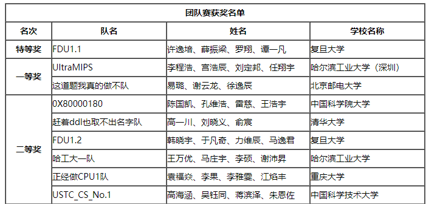
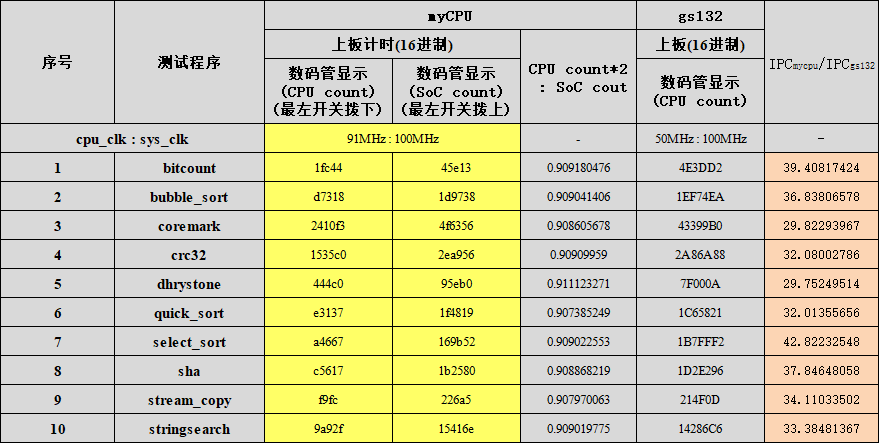
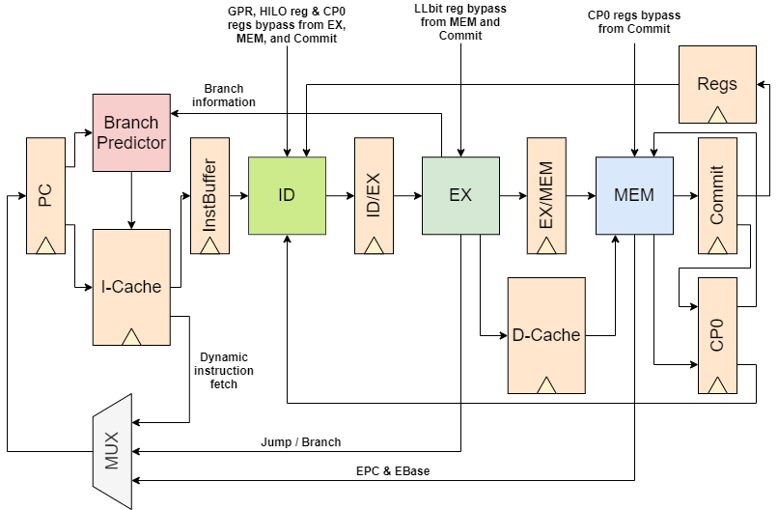
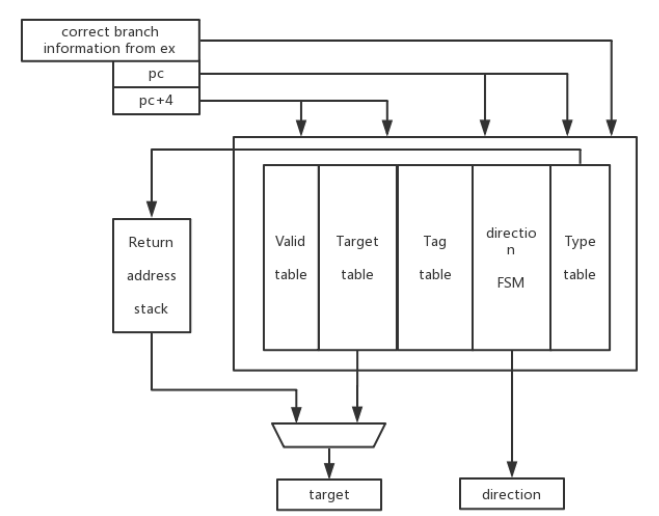

比赛官网: http://www.nscscc.org/ （官方目前或许正在维护）
UltraMIPS项目地址 :https://github.com/SocialistDalao/UltraMIPS_NSCSCC
UltraMIPS的Cache项目地址 :https://github.com/SocialistDalao/UltraMIPS_Cache
大赛指定的FPGA为的XILINX 公司 Artix-7 FPGA，使用Vivado2019.2 为 FPGA 综合工具。 该比赛每个学校最多参加两个队伍，2020年总共参赛81个队伍，最终UltraMIPS获得了第二名，次于复旦大学 FDU1.1 MIPS系统。比赛的评判标准为主频、IPC以及系统演示（包括操作系统和外部设备支持等）。 大赛最终排名如下（不包括三等奖）
UltraMIPS开发团队由李程浩、宫浩辰、刘定邦、任翔宇组成，非常感谢大家的辛勤付出，没有大家的努力，就没有UltraMIPS强大的功能和性能，衷心感谢为梦想而一同努力的伙伴。
接下来主要阐述UltraMIPS的大体架构。在下列十个测试集上运行的出来的结果，相较于龙芯gs132处理器IPC为其34.6倍， 程序执行速度为62.9倍，主频为91MHZ，为其182%。
支持的指令如下（不包括TLB指令）：
实现的精确异常支持（异常类型、助记符，异常编码，异常描述）：
CPU结构：
UltraMIPS 采用的动态分支预测，其实际上是根据历史分支信息判断，在保持高正确率（90.6%）的同时极大的减少了时延，其结构如下：
UltraMIPS的其他细节在项目的相关代码和文档以及演示中有详细演示，这里不再赘述。
在UltraMIPS中，本人除了负责高层次架构设计之外，还负责Cache的开发。Cache 在整个 UltraMIPs 的架构之中是至关重要的存在，UltraMIPS 在设计 Cache 的时候充分考虑到了性能与复杂度的平衡， Cache 深度融合于 CPU 之中，将数据的处理通路于 CPU 来说几乎隐形，只留下一个 Cache 的暂停信号，这其中的访存暂停机制都由 Cache 准备妥当，当数据准备充分，暂停信号便会自动撤销。这样的隐形实际上是由整洁的内部结构包装产生的结果，其结构如下：

实际上，为了方便进行动态取指和对指令 Cache 执行相应的动态指令预取，我们将动态取指的控制器模块也放在了 Cache 顶层模块，用来动 态的控制指令 Cache 的取指以及 PC 的变化，这也是本人负责的开发部分。但是在上述结构图中我们去除了该部件，将其看作 CPU 中的一部分。